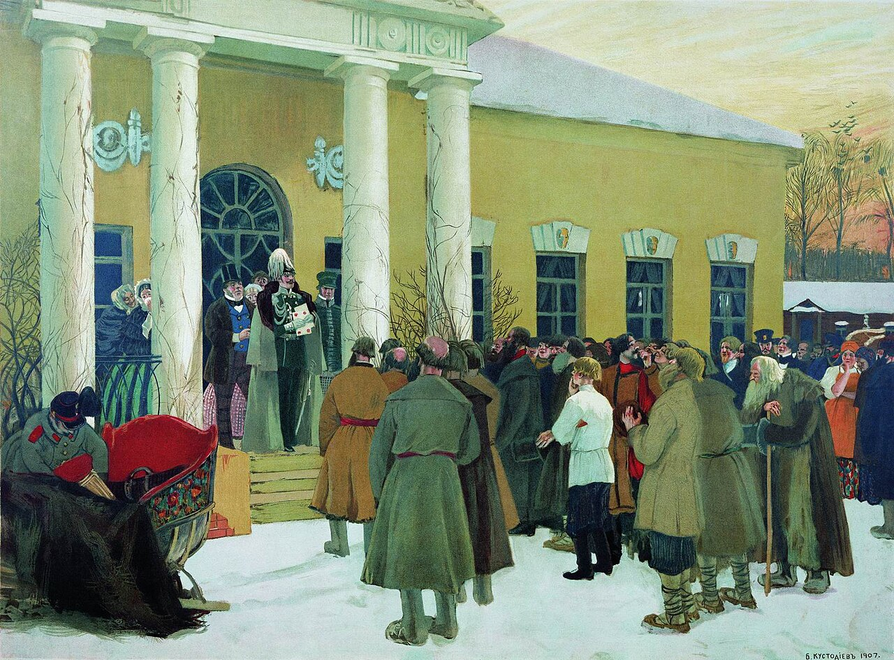
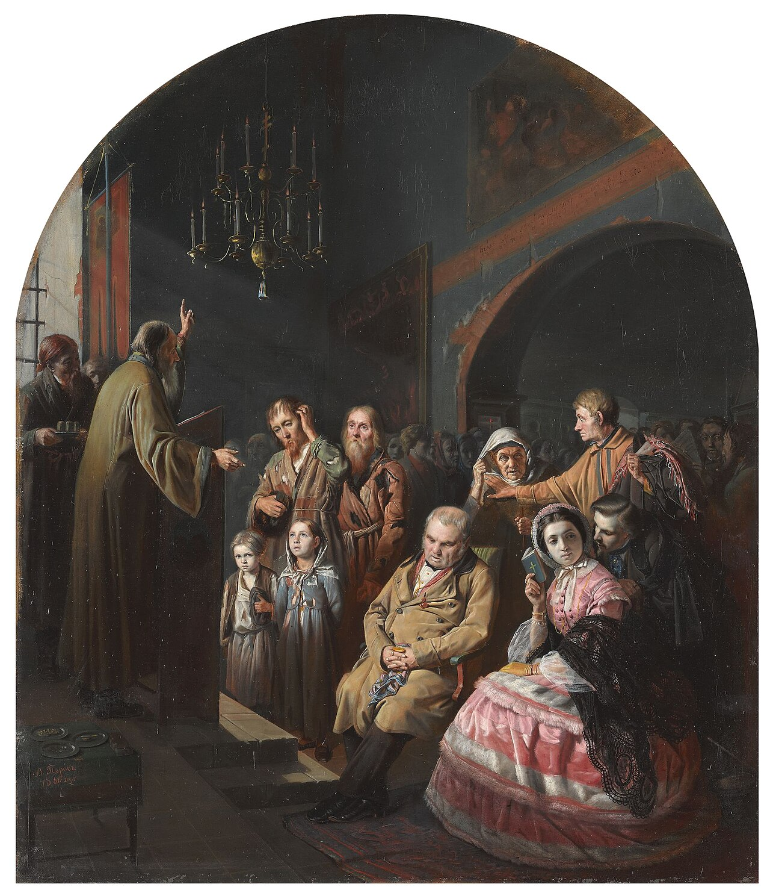
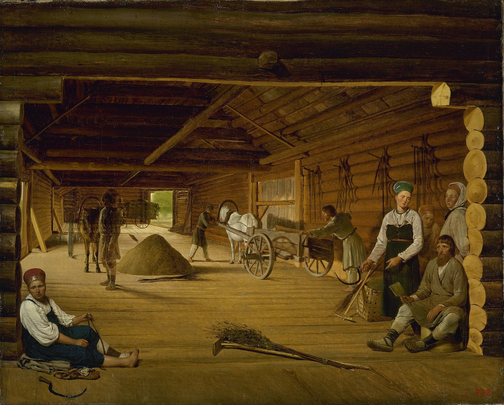
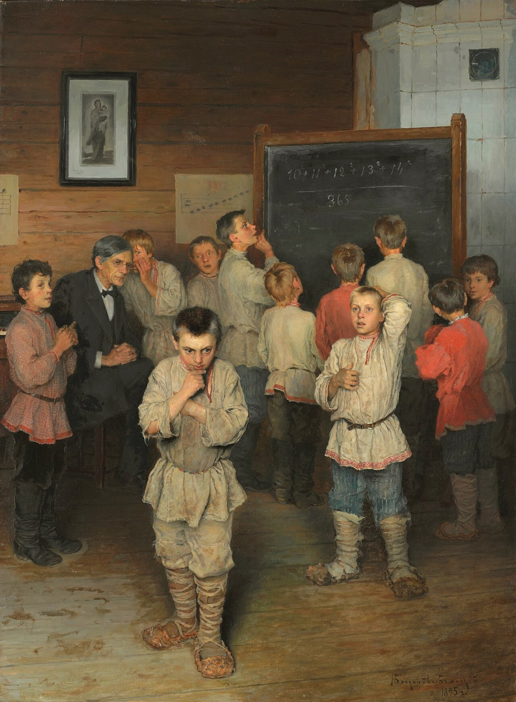
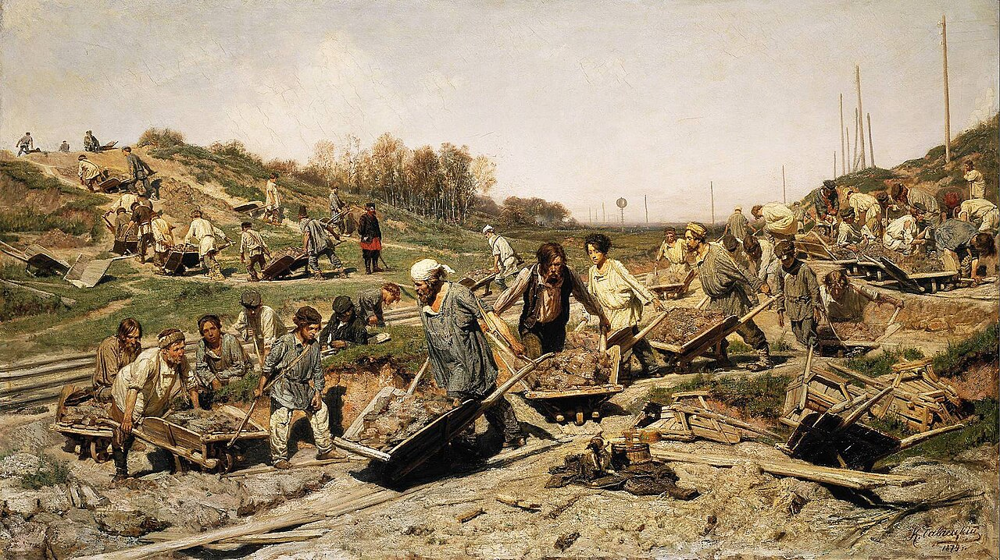
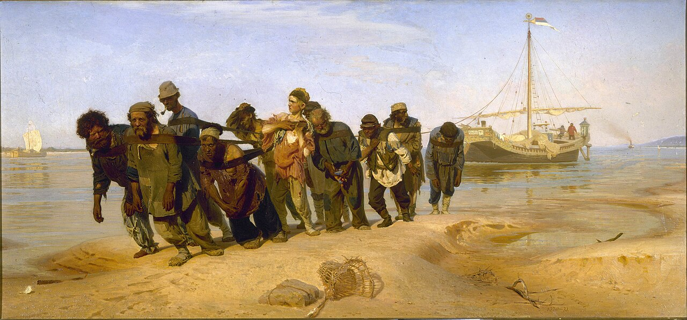
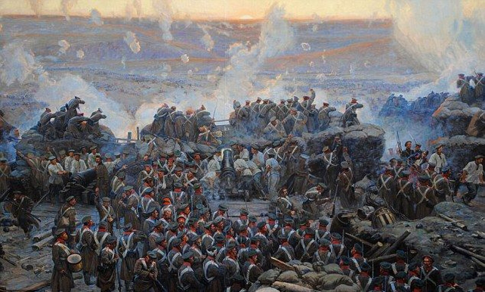
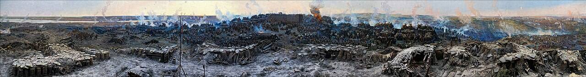
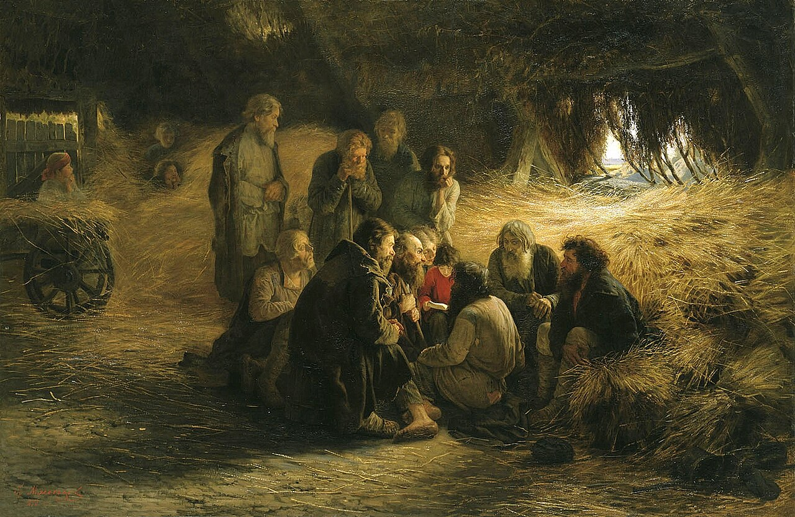
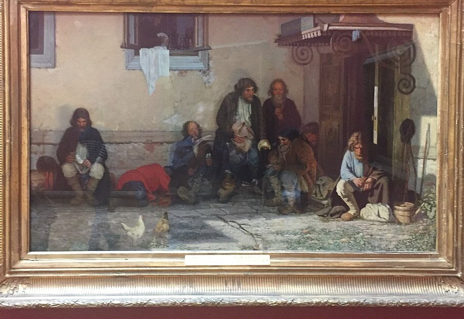

История России · Великие реформы
Реформы Александра II
1861 — 1864






История России · Великие реформы
1861 — 1864
01Крымская война · начало преобразований


02Либеральная бюрократия · кто готовил реформу
брат царя, председатель Главного комитета
освободила крестьян в своём имении Карловка
возглавил Редакционные комиссии
товарищ министра внутренних дел, автор проекта
03Крестьянская реформа · 19 февраля 1861
04Крестьянская реформа · права
брак и переход в другое сословие без согласия барина
покупка земли, торговля, договоры от своего имени
сход, староста, волостное правление
05Крестьянская реформа · выкуп
крестьянин платит помещику сам
помещику сразу вносит казна
крестьянин возвращает долг казне, 6 % в год
06Крестьянская реформа · сравнение
манифест царя; крестьяне получают надел
гражданская война, более 600 тыс. погибших; освобождённые земли не получили

07Судебная реформа · 20 ноября 1864
Учреждения судебных установлений
Устав уголовного судопроизводства
Устав гражданского судопроизводства
Устав о наказаниях, налагаемых мировыми судьями
08Судебная реформа · принципы
сословный, закрытый, письменный
двери открыты для публики и газет
12 заседателей решают вопрос о вине
прокурор и защитник спорят на равных
Публика в зале, решение за присяжными
31 марта 1878: оправдана
09Судебная реформа · инстанции
выборный судья, мелкие дела
12 присяжных заседателей
апелляция
кассация
10Реформа образования · устав 18 июня 1863
избирает ректора и деканов
утверждают учебные планы и присуждают степени
разбирает проступки студентов
11Реформа образования · 1864
открывают земства, общества, частные лица
классические и реальные, для всех сословий
по итогам гимназии
12Реформа образования · женские курсы
13Что изменилось
рынки труда, земли и капитала
равенство сословий перед судом
образование как социальный лифт
14Проблемы · деревня
около пятой части земли в чернозёмных губерниях; круговая порука
15Проблемы · суд, школа, власть
1872: Особое присутствие Сената; 1878: политические дела в военный суд
1863: нет студенческого самоуправления; 1871: устав Д. А. Толстого
1 марта 1881: царь убит, конституционный проект отвергнут
Изображения: Wikimedia Commons, общественное достояние — Б. Кустодиев, А. Венецианов, Ф. Рубо, Г. Мясоедов, И. Репин, Н. Богданов-Бельский, К. Савицкий, В. Перов.
